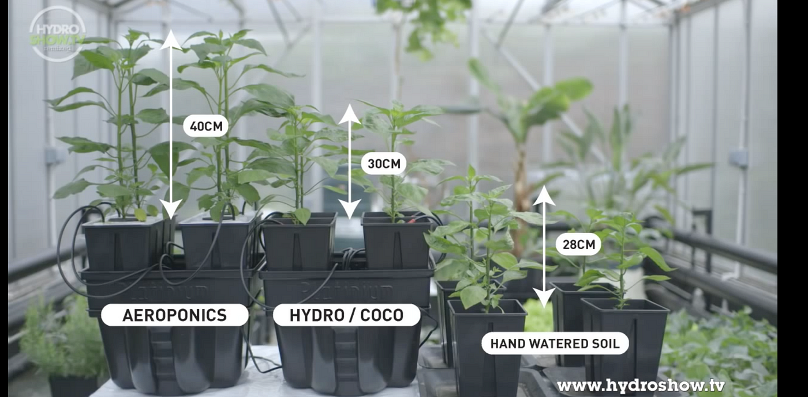

Aerophonics
In aeroponics, the plants are typically grown in a closed environment, such as a greenhouse, and the nutrient solution is delivered to the roots using high-pressure misters or sprayers. This allows the plants to absorb the nutrients they need while also receiving plenty of oxygen. Aeroponics has several advantages over traditional soil-based growing methods. For example, it can be more efficient in terms of water and nutrient usage, and it can also produce higher yields in a smaller space. Additionally, because the plants are grown without soil, there is less risk of soil-borne diseases and pests.
Benefits of Using Aerophonics Farming

Advantages of using Aerophonics
Aeroponics farming is a modern method of agriculture that involves growing plants without soil, by misting the roots with a nutrient-rich solution. This technique has numerous benefits, making it a highly beneficial approach to farming. Aeroponics is highly water-efficient, using up to 90% less water than traditional soil-based farming methods. This is because the nutrient solution is delivered directly to the roots, minimizing water waste and ensuring that the plants receive the exact amount of water they need to grow.
Aeroponics farming is a promising and innovative approach to agriculture that offers numerous benefits. With its high water and nutrient efficiency, space-saving capacity, reduced pest and disease risks, and sustainable practices, aeroponics has the potential to revolutionize modern agriculture, helping farmers to produce more food with fewer resources. As the world population continues to grow and climate change impacts our planet, the need for sustainable and efficient farming practices becomes increasingly important. Aeroponics offers a solution that can help meet these challenges while also improving food security, reducing waste, and protecting the environment.
